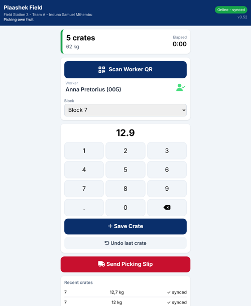
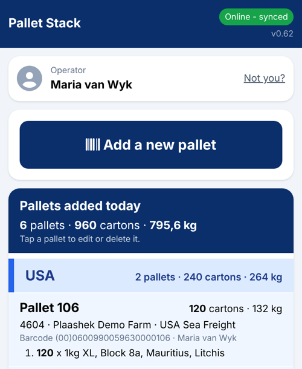
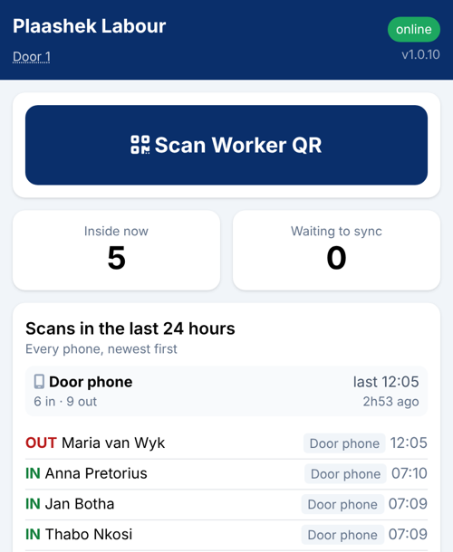
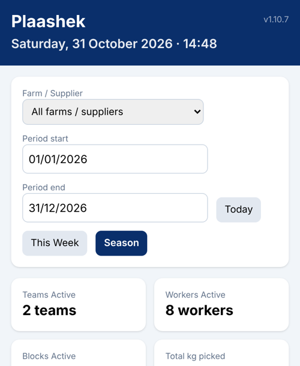
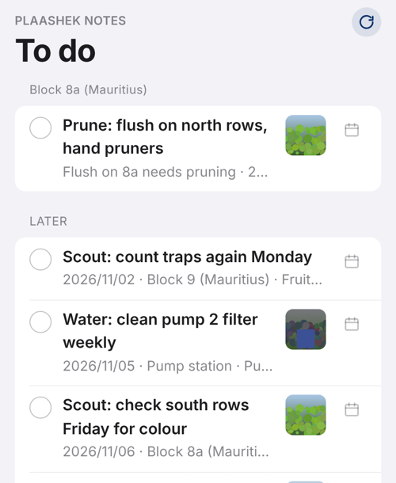

Plaashek
Farm software, one module per job, one farm per database. Hosted in South Africa at yourfarm.plaashek.co.za.
Built on a working farm for any crop that workers pick by hand: litchis, mangoes, avocados, citrus, macadamias, table grapes, stone fruit, berries. Apple or Android phones and tablets, nothing from an app store, and every field screen works with no signal.
Harvest
Field tablets, the gate, the office

- Badge scan, crate weight, picking slip
- Receiving: expected vs actual, condition
- Dashboard, picker pay per kg, reports
- Week planner, master data, badges
→
Packhouse
Tablets on the floor, phones at dispatch

- Sulfur tent and acid bath timers with alarms
- Pallet Stack: scan the label, list the cartons
- Delivery notes, USA and EU export forms
- Juice bins; any other process added as a screen
→
Labour
A phone at the pack-house door

- Same badge: green IN, red OUT
- Hours, daily and weekly overtime at the farm's rate
- Fix: every unpaired scan before payday
- Wage sheet to Excel
Owner
The owner's phone

- This season against every season
- Crop estimate block by block, in versions
- Weather record and a transparent risk score
- Market prices by pack type and buyer
Notes
The owner, the foreman, the next generation

- Dictate a note where you stand, with block and weather
- Actions become work orders on the To do list
- A block's whole history, searchable
- Optional AI tidy-up and questions
One register, entered onceWorkers, badges, blocks and suppliers live in Harvest; Packhouse, Labour and Owner read them. Owner reads the harvest and delivery notes; the planner reads the owner's estimate back. Nothing is typed twice.
Offline firstCrates, scans, runs, pallets and notes are saved on the device the instant they are captured and synced when there is signal. A double tap or a re-send never makes a duplicate.
Hosted in South AfricaEach farm has its own address and its own database, encrypted in transit and at rest, backed up daily, never shared between farms. Nothing to install or look after on a farm PC.
Start with one moduleTake Harvest alone, or Notes alone, and add the others as the farm needs them. Any phone works in the field; we recommend the rugged Ulefone RugKing 3 Pro or 4 Pro at the picking stations.